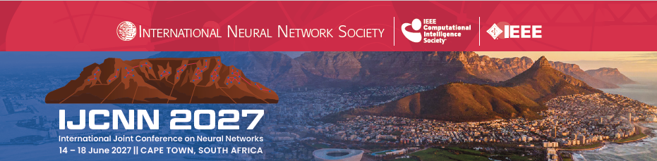

CALL FOR PAPERS · SPECIAL SESSION
Securing the Next Generation of AIAgentic, Collaborative and Multimodal Intelligence
International Joint Conference on Neural Networks
14–18 June 2027 · Cape Town, South Africa
01 / About the session
Beyond isolated AI models
Artificial intelligence is moving toward autonomous agents, conversational systems, collaborative learning and multimodal intelligence. These capabilities introduce new attack surfaces and trust dependencies that extend beyond individual neural models.
Our Special Session brings together researchers and practitioners working on the security, robustness and trustworthiness of these emerging systems, and on their applications to cybersecurity. We welcome theoretical, methodological and experimental contributions on secure neural architectures, adversarial defense, trustworthy reasoning, privacy-preserving collaboration, explainability and verification, including new threat models, benchmarks and reproducible evaluations.
02 / Research directions
Topics of interest
Topics include, but are not limited to:
Agentic & conversational AI
- Security and adversarial robustness of neural and agentic AI systems.
- Trustworthy coordination, communication, and decision-making in multi-agent systems.
- Trustworthy conversational agents: user guidance, usability, transparency, safety, factual reliability, privacy, robustness, and resistance to adversarial attacks and manipulation across multi-turn interactions.
- Adversarial attacks and defenses in foundation models and LLM-based systems.
Collaborative & multimodal intelligence
- Secure, robust, and privacy-preserving cooperative and collaborative learning, including federated and decentralized settings.
- Security and robustness of computer vision, multimodal AI, and vision-language models.
- Detection of deepfakes, synthetic media, and manipulated content.
Cybersecurity applications
- AI-driven cyber threat detection, intelligence, and response.
- Collaborative and multi-agent approaches to cybersecurity.
Trustworthy AI & evaluation
- Knowledge-guided and neuro-symbolic methods for trustworthy AI.
- Explainability, transparency, and auditability of neural and autonomous systems.
- Provenance, traceability, and verification of AI decisions and actions.
- Security assessment, adversarial benchmarking, and red teaming of AI systems.
03 / Timeline
Important dates
1 Dec 2026Submissions open
31 Jan 2027Paper submission deadline
15 Mar 2027Acceptance notification
12 Apr 2027Camera-ready & author registration
14–18 Jun 2027Conference
15–17 Jun 2027Special Sessions
Dates follow the official conference schedule.
04 / For authors
Paper submission
- Prepare an original, anonymized paper using the IEEE conference template. Standard submissions are 4–6 pages; up to four extra pages are permitted at $100 per additional page.
- Submit through Microsoft CMT as a regular paper (Main Track).
- Select the exact Special Session title as the primary Subject Area:
Securing the Next Generation of AI: Agentic, Collaborative and Multimodal Intelligence
Submissions follow the regular double-blind peer-review process. Accepted papers meeting the conference publication requirements will appear in the proceedings.
05 / Organizing team
Special Session organizers
GFRKCo-organizerRida Khatoun
LTCI, Télécom Paris, Institut Polytechnique de Paris, France
Profile · Google Scholar OBCo-organizerOmran Berjawi
LTCI, Télécom Paris, Institut Polytechnique de Paris, France
Profile · Google Scholar CS